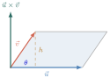
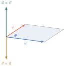
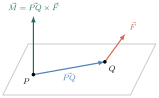
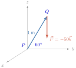
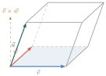

- កំណត់ផលគុណនៃពីរវ៉ិចទ័រក្នុងលំហ
- កំណត់និយមន័យផលគុណពីរវ៉ិចទ័រក្នុងលំហ
- កំណត់លក្ខណៈនៃផលគុណពីរវ៉ិចទ័រក្នុងលំហនិងផលគុណចម្រុះ
- អនុវត្តនៅក្នុងរូបវិទ្យា ។
1. និយមន័យផលគុណនៃពីរវ៉ិចទ័រ
1.1. និយមន័យ
ឧទាហរណ៍ : គេឱ្យវ៉ិចទ័រ \(\displaystyle \vec{u}=2\vec{i}+\vec{j}-2\vec{k}\) និង \(\displaystyle \vec{v}=\vec{i}-3\vec{j}+2\vec{k}\) ក្នុងតម្រុយអរតូណរម៉ាល់មានទិសដៅវិជ្ជមាន \(\displaystyle (O, \vec{i}, \vec{j}, \vec{k})\) ។ គេកំណត់វ៉ិចទ័រថ្មីមួយទៀតគឺ
គេថា \(\displaystyle \vec{w}\) ជាផលគុណនៃពីរវ៉ិចទ័រ \(\displaystyle \vec{u}\) និង \(\displaystyle \vec{v}\) ហើយកំណត់សរសេរ \(\displaystyle \vec{w} = \vec{u} \times \vec{v}\) ឬ \(\displaystyle \vec{w} = \vec{u} \wedge \vec{v}\) ។
- \(\displaystyle \vec{u} \times \vec{v}\) ឬ \(\displaystyle \vec{u} \wedge \vec{v}\) អានថា “\(\displaystyle \vec{u}\) វ៉ិចទ័រយ៉ែល \(\displaystyle \vec{v}\)”
បើ \(\displaystyle \vec{u} = u_{1}\vec{i} + u_{2}\vec{j} + u_{3}\vec{k}\) និង \(\displaystyle \vec{v} = v_{1}\vec{i} + v_{2}\vec{j} + v_{3}\vec{k}\) ជាវ៉ិចទ័រក្នុងលំហ ។ ផលគុណនៃពីរវ៉ិចទ័រ \(\displaystyle \vec{u}\) និង \(\displaystyle \vec{v}\) គឺជាវ៉ិចទ័រកំណត់ដោយ \(\displaystyle \vec{u} \times \vec{v} = (u_{2}v_{3} - u_{3}v_{2})\vec{i} - (u_{1}v_{3} - u_{3}v_{1})\vec{j} + (u_{1}v_{2} - u_{2}v_{1})\vec{k}\) ។
ដើម្បីងាយស្រួលក្នុងការគណនាផលគុណនៃពីរវ៉ិចទ័រ គេសន្មតប្រើដេទែមីណង់លំដាប់បីដូចខាងក្រោម ៖
ដាក់កូអរដោនេវ៉ិចទ័រ \(\displaystyle \vec{u}\) ក្នុងជួរដេកទី 2 និងដាក់កូអរដោនេវ៉ិចទ័រ \(\displaystyle \vec{v}\) ក្នុងជួរដេកទី 3 នោះ គេបាន
គេឱ្យ \(\displaystyle \vec{u} = \vec{i} - 2\vec{j} + \vec{k}\) និង \(\displaystyle \vec{v} = 3\vec{i} + \vec{j} - 2\vec{k}\) ។ រកវ៉ិចទ័រ
- ក. \(\displaystyle \vec{u} \times \vec{v}\)
- ខ. \(\displaystyle \vec{v} \times \vec{u}\)
- គ. \(\displaystyle \vec{v} \times \vec{v}\) ។
- ក. \(\displaystyle \vec{u} \times \vec{v} = \begin{vmatrix} \vec{i} & \vec{j} & \vec{k} \\ 1 & -2 & 1 \\ 3 & 1 & -2 \end{vmatrix} = \begin{vmatrix} -2 & 1 \\ 1 & -2 \end{vmatrix}\vec{i} - \begin{vmatrix} 1 & 1 \\ 3 & -2 \end{vmatrix}\vec{j} + \begin{vmatrix} 1 & -2 \\ 3 & 1 \end{vmatrix}\vec{k} = (4 - 1)\vec{i} - (-2 - 3)\vec{j} + (1 + 6)\vec{k} = 3\vec{i} + 5\vec{j} + 7\vec{k}\)
- ខ. \(\displaystyle \vec{v} \times \vec{u} = \begin{vmatrix} \vec{i} & \vec{j} & \vec{k} \\ 3 & 1 & -2 \\ 1 & -2 & 1 \end{vmatrix} = \begin{vmatrix} 1 & -2 \\ -2 & 1 \end{vmatrix}\vec{i} - \begin{vmatrix} 3 & -2 \\ 1 & 1 \end{vmatrix}\vec{j} + \begin{vmatrix} 3 & 1 \\ 1 & -2 \end{vmatrix}\vec{k} = (1 - 4)\vec{i} - (3 + 2)\vec{j} + (-6 - 1)\vec{k} = -3\vec{i} - 5\vec{j} - 7\vec{k}\)
- គ. \(\displaystyle \vec{v} \times \vec{v} = \begin{vmatrix} \vec{i} & \vec{j} & \vec{k} \\ 3 & 1 & -2 \\ 3 & 1 & -2 \end{vmatrix} = \begin{vmatrix} 1 & -2 \\ 1 & -2 \end{vmatrix}\vec{i} - \begin{vmatrix} 3 & -2 \\ 3 & -2 \end{vmatrix}\vec{j} + \begin{vmatrix} 3 & 1 \\ 3 & 1 \end{vmatrix}\vec{k} = \vec{0}\) ។
តាមឧទាហរណ៍ខាងលើ គេសង្កេតឃើញថា \(\displaystyle \vec{u} \times \vec{v} = -(\vec{v} \times \vec{u})\) និង \(\displaystyle \vec{v} \times \vec{v} = \vec{0}\) ។
គេឱ្យ \(\displaystyle \vec{u} = \sqrt{2}\vec{i} + \sqrt{3}\vec{j} + 2\vec{k}\) និង \(\displaystyle \vec{v} = \vec{i} + \vec{j}\) ។ ចូរប្រៀបធៀប \(\displaystyle |\vec{u} \times \vec{v}|\) និង \(\displaystyle |\vec{v} \times \vec{u}|\) ។
មើលចម្លើយ
\(\displaystyle |\vec{u} \times \vec{v}| = |\vec{v} \times \vec{u}|\) ។
B. លក្ខណៈផលគុណនៃពីរវ៉ិចទ័រ
បើ \(\displaystyle \vec{u}, \vec{v}\) និង \(\displaystyle \vec{w}\) ជាបីវ៉ិចទ័រនៅក្នុងលំហ ហើយ \(\displaystyle c\) ជាចំនួនពិត នោះ៖
- ក. \(\displaystyle \vec{u} \times \vec{v} = -(\vec{v} \times \vec{u})\)
- ខ. \(\displaystyle \vec{u} \times (\vec{v} + \vec{w}) = (\vec{u} \times \vec{v}) + (\vec{u} \times \vec{w})\)
- គ. \(\displaystyle c(\vec{u} \times \vec{v}) = (c\vec{u}) \times \vec{v} = \vec{u} \times (c\vec{v})\)
- ឃ. \(\displaystyle \vec{u} \times \vec{0} = \vec{0} \times \vec{u} = \vec{0}\)
- ង. \(\displaystyle \vec{u} \times \vec{u} = \vec{0}\)
- ច. \(\displaystyle \vec{u} \cdot (\vec{v} \times \vec{w}) = (\vec{u} \times \vec{v}) \cdot \vec{w}\) ។
សម្រាយបញ្ជាក់
- ក. តាង \(\displaystyle \vec{u} = u_{1}\vec{i} + u_{2}\vec{j} + u_{3}\vec{k}\) និង \(\displaystyle \vec{v} = v_{1}\vec{i} + v_{2}\vec{j} + v_{3}\vec{k}\)
គេបាន \(\displaystyle \vec{u} \times \vec{v} = (u_{2}v_{3} - u_{3}v_{2})\vec{i} - (u_{1}v_{3} - u_{3}v_{1})\vec{j} + (u_{1}v_{2} - u_{2}v_{1})\vec{k}\) និង
\(\displaystyle \vec{v} \times \vec{u} = (v_{2}u_{3} - v_{3}u_{2})\vec{i} - (v_{1}u_{3} - v_{3}u_{1})\vec{j} + (v_{1}u_{2} - v_{2}u_{1})\vec{k}\)
នាំឱ្យ \(\displaystyle \vec{u} \times \vec{v} = -(\vec{v} \times \vec{u})\) ។ - ខ.
តាង \(\displaystyle \vec{u} = u_{1}\vec{i} + u_{2}\vec{j} + u_{3}\vec{k}, \vec{v} = v_{1}\vec{i} + v_{2}\vec{j} + v_{3}\vec{k}\) និង \(\displaystyle \vec{w} = w_{1}\vec{i} + w_{2}\vec{j} + w_{3}\vec{k}\)
នោះគេបាន \(\displaystyle \vec{v} + \vec{w} = (v_{1} + w_{1})\vec{i} + (v_{2} + w_{2})\vec{j} + (v_{3} + w_{3})\vec{k}\)
នាំឱ្យ\[\begin{aligned} \vec{u} \times (\vec{v} + \vec{w}) &= [u_{2}(v_{3} + w_{3}) - u_{3}(v_{2} + w_{2})]\vec{i} - [u_{1}(v_{3} + w_{3}) - u_{3}(v_{1} + w_{1})]\vec{j} + [u_{1}(v_{2} + w_{2}) - u_{2}(v_{1} + w_{1})]\vec{k} \\ &= [(u_{2}v_{3} - u_{3}v_{2})\vec{i} - (u_{1}v_{3} - u_{3}v_{1})\vec{j} + (u_{1}v_{2} - u_{2}v_{1})\vec{k}] + [(u_{2}w_{3} - u_{3}w_{2})\vec{i} - (u_{1}w_{3} - u_{3}w_{1})\vec{j} + (u_{1}w_{2} - u_{2}w_{1})\vec{k}] \\ &= \vec{u} \times \vec{v} + \vec{u} \times \vec{w} \text{ ។} \end{aligned}\] - គ.
តាង \(\displaystyle \vec{u} = u_{1}\vec{i} + u_{2}\vec{j} + u_{3}\vec{k}, \vec{v} = v_{1}\vec{i} + v_{2}\vec{j} + v_{3}\vec{k}\) និង \(\displaystyle c\) ជាចំនួនថេរ
គេបាន\[\begin{aligned} c(\vec{u} \times \vec{v}) &= c(u_{2}v_{3} - u_{3}v_{2})\vec{i} - c(u_{1}v_{3} - u_{3}v_{1})\vec{j} + c(u_{1}v_{2} - u_{2}v_{1})\vec{k} \\ &= (cu_{2}v_{3} - cu_{3}v_{2})\vec{i} - (cu_{1}v_{3} - cu_{3}v_{1})\vec{j} + (cu_{1}v_{2} - cu_{2}v_{1})\vec{k} \\ &= (c\vec{u}) \times \vec{v} \text{ ។} \end{aligned}\] - ឃ. តាង \(\displaystyle \vec{u} = u_{1}\vec{i} + u_{2}\vec{j} + u_{3}\vec{k}\) និង \(\displaystyle \vec{0} = 0\vec{i} + 0\vec{j} + 0\vec{k}\)
គេបាន \(\displaystyle \vec{u} \times \vec{0} = (u_{2}0 - u_{3}0)\vec{i} - (u_{1}0 - u_{3}0)\vec{j} + (u_{1}0 - u_{2}0)\vec{k} = \vec{0}\) និង
\(\displaystyle \vec{0} \times \vec{u} = (0u_{2} - 0u_{3})\vec{i} - (0u_{1} - 0u_{3})\vec{j} + (0u_{1} - 0u_{2})\vec{k} = \vec{0}\)
នាំឱ្យ \(\displaystyle \vec{u} \times \vec{0} = \vec{0} \times \vec{u} = \vec{0}\) ។ - ង. តាង \(\displaystyle \vec{u} = u_{1}\vec{i} + u_{2}\vec{j} + u_{3}\vec{k}\)
គេបាន \(\displaystyle \vec{u} \times \vec{u} = (u_{2}u_{3} - u_{3}u_{2})\vec{i} - (u_{1}u_{3} - u_{3}u_{1})\vec{j} + (u_{1}u_{2} - u_{2}u_{1})\vec{k} = \vec{0}\)
ដូច្នេះ \(\displaystyle \vec{u} \times \vec{u} = \vec{0}\) ។ - ច.
តាង \(\displaystyle \vec{u} = u_{1}\vec{i} + u_{2}\vec{j} + u_{3}\vec{k}, \vec{v} = v_{1}\vec{i} + v_{2}\vec{j} + v_{3}\vec{k}\) និង \(\displaystyle \vec{w} = w_{1}\vec{i} + w_{2}\vec{j} + w_{3}\vec{k}\)
គេបាន \(\displaystyle \vec{v} \times \vec{w} = (v_{2}w_{3} - v_{3}w_{2})\vec{i} - (v_{1}w_{3} - v_{3}w_{1})\vec{j} + (v_{1}w_{2} - v_{2}w_{1})\vec{k}\)
នាំឱ្យ\[\begin{aligned} \vec{u} \cdot (\vec{v} \times \vec{w}) &= u_{1}(v_{2}w_{3} - v_{3}w_{2}) - u_{2}(v_{1}w_{3} - v_{3}w_{1}) + u_{3}(v_{1}w_{2} - v_{2}w_{1}) \\ &= u_{1}v_{2}w_{3} - u_{1}v_{3}w_{2} - u_{2}v_{1}w_{3} + u_{2}v_{3}w_{1} + u_{3}v_{1}w_{2} - u_{3}v_{2}w_{1} \end{aligned}\]ម្យ៉ាងទៀត \(\displaystyle \vec{u} \times \vec{v} = (u_{2}v_{3} - u_{3}v_{2})\vec{i} - (u_{1}v_{3} - u_{3}v_{1})\vec{j} + (u_{1}v_{2} - u_{2}v_{1})\vec{k}\)
នាំឱ្យ\[\begin{aligned} (\vec{u} \times \vec{v}) \cdot \vec{w} &= (u_{2}v_{3} - u_{3}v_{2})w_{1} - (u_{1}v_{3} - u_{3}v_{1})w_{2} + (u_{1}v_{2} - u_{2}v_{1})w_{3} \\ &= u_{2}v_{3}w_{1} - u_{3}v_{2}w_{1} - u_{1}v_{3}w_{2} + u_{3}v_{1}w_{2} + u_{1}v_{2}w_{3} - u_{2}v_{1}w_{3} \end{aligned}\]តាម (1) និង (2) គេបាន \(\displaystyle \vec{u} \cdot (\vec{v} \times \vec{w}) = (\vec{u} \times \vec{v}) \cdot \vec{w}\) ។
C. បំណកស្រាយផលគុណនៃពីរវ៉ិចទ័រតាមបែបធរណីមាត្រ
បើ \(\displaystyle \vec{u}\) និង \(\displaystyle \vec{v}\) ខុសពីវ៉ិចទ័រសូន្យនៅក្នុងលំហ និង \(\displaystyle \theta\) ជាមុំផ្គុំរវាង \(\displaystyle \vec{u}\) និង \(\displaystyle \vec{v}\) នោះ
- ក. \(\displaystyle \vec{u} \times \vec{v}\) អរតូកូណាល់ទៅនឹង \(\displaystyle \vec{u}\) ផង និង \(\displaystyle \vec{v}\) ផង ។
- ខ. \(\displaystyle |\vec{u} \times \vec{v}| = |\vec{u}| \cdot |\vec{v}|\sin\theta\) ។
- គ. បើ \(\displaystyle \vec{u} \times \vec{v} = \vec{0}\) នោះ \(\displaystyle \vec{u}\) និង \(\displaystyle \vec{v}\) ជាវ៉ិចទ័រកូលីនេអ៊ែរនឹងគ្នា ។
- ឃ. \(\displaystyle |\vec{u} \times \vec{v}| =\) ផ្ទៃក្រឡារបស់ប្រលេឡូក្រាមដែលសង់លើវ៉ិចទ័រ \(\displaystyle \vec{u}\) និង \(\displaystyle \vec{v}\) ។
- ង. \(\displaystyle \frac{1}{2}|\vec{u} \times \vec{v}| =\) ផ្ទៃក្រឡារបស់ត្រីកោណដែលសង់លើវ៉ិចទ័រ \(\displaystyle \vec{u}\) និង \(\displaystyle \vec{v}\) ។

▶ មើលរបៀបគូសរូបនេះសម្រាយបញ្ជាក់ ដោយគណនា \(\displaystyle (\vec{u} \times \vec{v}) \cdot \vec{u}\) និង \(\displaystyle (\vec{u} \times \vec{v}) \cdot \vec{v}\)
- ក.
តាង \(\displaystyle \vec{u} = u_{1}\vec{i} + u_{2}\vec{j} + u_{3}\vec{k}\) និង \(\displaystyle \vec{v} = v_{1}\vec{i} + v_{2}\vec{j} + v_{3}\vec{k}\)
នោះគេបាន \(\displaystyle \vec{u} \times \vec{v} = (u_{2}v_{3} - u_{3}v_{2})\vec{i} - (u_{1}v_{3} - u_{3}v_{1})\vec{j} + (u_{1}v_{2} - u_{2}v_{1})\vec{k}\)
នាំឱ្យ\[\begin{aligned} (\vec{u} \times \vec{v}) \cdot \vec{u} &= (u_{2}v_{3} - u_{3}v_{2})u_{1} - (u_{1}v_{3} - u_{3}v_{1})u_{2} + (u_{1}v_{2} - u_{2}v_{1})u_{3} \\ &= u_{2}v_{3}u_{1} - u_{3}v_{2}u_{1} - u_{1}v_{3}u_{2} + u_{3}v_{1}u_{2} + u_{1}v_{2}u_{3} - u_{2}v_{1}u_{3} = 0 \end{aligned}\]ដូច្នេះ \(\displaystyle (\vec{u} \times \vec{v}) \cdot \vec{u} = 0\) នាំឱ្យ \(\displaystyle \vec{u} \times \vec{v}\) អរតូកូណាល់ទៅនឹង \(\displaystyle \vec{u}\) ។
\[\begin{aligned} (\vec{u} \times \vec{v}) \cdot \vec{v} &= (u_{2}v_{3} - u_{3}v_{2})v_{1} - (u_{1}v_{3} - u_{3}v_{1})v_{2} + (u_{1}v_{2} - u_{2}v_{1})v_{3} \\ &= u_{2}v_{3}v_{1} - u_{3}v_{2}v_{1} - u_{1}v_{3}v_{2} + u_{3}v_{1}v_{2} + u_{1}v_{2}v_{3} - u_{2}v_{1}v_{3} = 0 \end{aligned}\]\(\displaystyle (\vec{u} \times \vec{v}) \cdot \vec{v} = 0\) នាំឱ្យ \(\displaystyle \vec{u} \times \vec{v}\) អរតូកូណាល់ទៅនឹង \(\displaystyle \vec{v}\) ។
ដូច្នេះ \(\displaystyle \vec{u} \times \vec{v}\) អរតូកូណាល់ទៅនឹង \(\displaystyle \vec{u}\) និង \(\displaystyle \vec{v}\) ផង ។ - ខ. \[\begin{aligned} |\vec{u}| \cdot |\vec{v}| \sin\theta &= |\vec{u}| |\vec{v}| \sqrt{1 - \cos^{2}\theta} \\ &= |\vec{u}| \cdot |\vec{v}| \sqrt{1 - \frac{(\vec{u} \cdot \vec{v})^{2}}{|\vec{u}|^{2} |\vec{v}|^{2}}} \quad \left(\text{ព្រោះ } \cos\theta = \frac{\vec{u} \cdot \vec{v}}{|\vec{u}| \cdot |\vec{v}|}\right) \\ &= \sqrt{|\vec{u}|^{2} |\vec{v}|^{2} - (\vec{u} \cdot \vec{v})^{2}} \\ &= \sqrt{(u_{1}^{2} + u_{2}^{2} + u_{3}^{2})(v_{1}^{2} + v_{2}^{2} + v_{3}^{2}) - (u_{1}v_{1} + u_{2}v_{2} + u_{3}v_{3})^{2}} \\ &= \sqrt{(u_{2}v_{3} - u_{3}v_{2})^{2} + (u_{1}v_{3} - u_{3}v_{1})^{2} + (u_{1}v_{2} - u_{2}v_{1})^{2}} \\ &= |\vec{u} \times \vec{v}| \text{ ។} \end{aligned}\]
- គ. ដោយប្រលេឡូក្រាមសង់លើវ៉ិចទ័រ \(\displaystyle \vec{u}\) និង \(\displaystyle \vec{v}\) ហើយ \(\displaystyle \theta\) ជាមុំរវាង \(\displaystyle \vec{u}\) និង \(\displaystyle \vec{v}\) នោះគេបាន
កម្ពស់នៃប្រលេឡូក្រាម ស្មើ \(\displaystyle |\vec{v}|\sin\theta\)
ផ្ទៃក្រឡានៃប្រលេឡូក្រាម \(\displaystyle \mathcal{A} = |\vec{u}| |\vec{v}| \sin\theta = |\vec{u} \times \vec{v}|\) ។
វិបាក :
- ក. បើ \(\displaystyle \vec{n}\) ជាវ៉ិចទ័រឯកតា ហើយអរតូកូណាល់ទៅនឹង \(\displaystyle \vec{u}\) ផង និង \(\displaystyle \vec{v}\) ផង នោះ \(\displaystyle \vec{u} \times \vec{v} = \pm |\vec{u} \times \vec{v}|\vec{n}\) ។
- ខ. គេឃើញថា \(\displaystyle \vec{u} \times \vec{v}\) និង \(\displaystyle \vec{v} \times \vec{u}\) ជាវ៉ិចទ័រដែលកែងទៅនឹងប្លង់ដែលកំណត់ដោយ \(\displaystyle \vec{u}\) និង \(\displaystyle \vec{v}\) ។

▶ មើលរបៀបគូសរូបនេះចំពោះវ៉ិចទ័រឯកតា \(\displaystyle \vec{i}, \vec{j}\) និង \(\displaystyle \vec{k}\) គេបាន \(\displaystyle \vec{k} = \vec{i} \times \vec{j}\), \(\displaystyle \vec{i} = \vec{j} \times \vec{k}\) និង \(\displaystyle \vec{j} = \vec{k} \times \vec{i}\) ។
ដោយ \(\displaystyle \vec{i} \times \vec{j} = (|\vec{i}||\vec{j}|\sin\theta)\vec{k}\) (\(\displaystyle \theta\) ជាមុំផ្គុំឡើងដោយវ៉ិចទ័រ \(\displaystyle \vec{i}\) និង \(\displaystyle \vec{j}\)) ដោយ \(\displaystyle \vec{i}\) អរតូកូណាល់ \(\displaystyle \vec{j}\) គេបាន \(\displaystyle \theta = \frac{\pi}{2}\) ហើយ \(\displaystyle \vec{i}\) និង \(\displaystyle \vec{j}\) ជាវ៉ិចទ័រឯកតា នោះគេបាន \(\displaystyle |\vec{i}| = 1\), \(\displaystyle |\vec{j}| = 1\) និង \(\displaystyle \sin\theta = 1\) នាំឱ្យ \(\displaystyle \vec{i} \times \vec{j} = (|\vec{i}||\vec{j}|\sin\theta)\vec{k} \implies \vec{i} \times \vec{j} = \vec{k}\) ។ ស្រាយដូចគ្នាដែរ គេបាន \(\displaystyle \vec{i} = \vec{j} \times \vec{k}\) និង \(\displaystyle \vec{j} = \vec{k} \times \vec{i}\) ។
រកវ៉ិចទ័រឯកតាដែលអរតូកូណាល់ទៅនឹងវ៉ិចទ័រ \(\displaystyle \vec{u} = \vec{i} - 4\vec{j} + \vec{k}\) និង \(\displaystyle \vec{v} = 2\vec{i} + 3\vec{j}\) ។
ផលគុណវ៉ិចទ័រ \(\displaystyle \vec{u} \times \vec{v}\) អរតូកូណាល់ទៅនឹងវ៉ិចទ័រ \(\displaystyle \vec{u}\) និង \(\displaystyle \vec{v}\) គឺ
ដោយ \(\displaystyle |\vec{u} \times \vec{v}| = \sqrt{(-3)^{2} + 2^{2} + 11^{2}} = \sqrt{134}\) នោះគេបានវ៉ិចទ័រឯកតាដែលអរតូកូណាល់ទៅនឹងវ៉ិចទ័រ \(\displaystyle \vec{u}\) និង \(\displaystyle \vec{v}\) គឺ \(\displaystyle \frac{\vec{u} \times \vec{v}}{|\vec{u} \times \vec{v}|} = -\frac{3}{\sqrt{134}}\vec{i} + \frac{2}{\sqrt{134}}\vec{j} + \frac{11}{\sqrt{134}}\vec{k}\) ។ វ៉ិចទ័រនេះជាវ៉ិចទ័រឯកតា ព្រោះ
បង្ហាញថាចតុកោណដែលមានកំពូល \(\displaystyle A(5,2,0)\), \(\displaystyle B(2,6,1)\), \(\displaystyle C(2,4,7)\) និង \(\displaystyle D(5,0,6)\) ជាប្រលេឡូក្រាម រួចរកផ្ទៃក្រឡានៃប្រលេឡូក្រាមនេះ ។
ដោយជ្រុងឈមគ្នានៃចតុកោណនេះ តាមវ៉ិចទ័រដូចខាងក្រោម ៖ \(\displaystyle \vec{AB} = -3\vec{i} + 4\vec{j} + \vec{k}\) និង \(\displaystyle \vec{DC} = -3\vec{i} + 4\vec{j} + \vec{k}\) នាំឱ្យ \(\displaystyle \vec{AB} = \vec{DC}\) ដូច្នេះ ចតុកោណនេះជាប្រលេឡូក្រាមដែលមាន \(\displaystyle \vec{AB}\) និង \(\displaystyle \vec{AD}\) ជាជ្រុងជាប់ ។ ម្យ៉ាងទៀត \(\displaystyle \vec{AD} = -2\vec{j} + 6\vec{k}\)
យើងបានផ្ទៃក្រឡានៃប្រលេឡូក្រាមគឺ \(\displaystyle |\vec{AB} \times \vec{AD}| = \sqrt{1036} \approx 32.19\) ឯកតាផ្ទៃក្រឡា ។
- ក. គេឱ្យបីចំណុច \(\displaystyle A(1,1,1)\), \(\displaystyle B(2,0,3)\) និង \(\displaystyle C(-1,2,0)\) នៅក្នុងលំហ ។ រកផ្ទៃក្រឡាត្រីកោណ \(\displaystyle ABC\) ។
- ខ. បង្ហាញថាចតុកោណដែលមានកំពូលត្រង់ចំណុច \(\displaystyle A(5,2,0)\), \(\displaystyle B(2,6,1)\), \(\displaystyle C(2,4,7)\) និង \(\displaystyle D(5,0,6)\) ជាប្រលេឡូក្រាម រួចរកផ្ទៃក្រឡានៃប្រលេឡូក្រាមនោះ ។
មើលចម្លើយ
- ក. \(\displaystyle \mathcal{A}_{ABC} = \frac{\sqrt{11}}{2}\) ឯកតាផ្ទៃ
- ខ. ប្រើកូអរដោនេស្មើគ្នានៃពីរវ៉ិចទ័រ និង \(\displaystyle \mathcal{A}_{ABCD} = 2\sqrt{259}\) ឯកតាផ្ទៃ ។
D. អនុវត្តន៍ផលគុណពីរវ៉ិចទ័រនៅក្នុងរូបវិទ្យា : ម៉ូម៉ង់ \(\displaystyle \vec{M}\) នៃកម្លាំង \(\displaystyle \vec{F}\) ចំពោះចំណុច \(\displaystyle P\)
បើ \(\displaystyle Q\) ជាចំណុចចាប់នៃកម្លាំង \(\displaystyle \vec{F}\) នោះម៉ូម៉ង់នៃកម្លាំង \(\displaystyle \vec{F}\) ចំពោះចំណុច \(\displaystyle P\) គឺ \(\displaystyle |\vec{M}| = |\vec{PQ} \times \vec{F}|\) ។

▶ មើលរបៀបគូសរូបនេះកម្លាំងបញ្ឈរ \(\displaystyle 50\text{ N}\) (ញូតុន) មានអំពើត្រង់ចុងនៃដងថ្លឹងមួយដែលជើងនៃដងថ្លឹងនេះភ្ជាប់ចំណុច \(\displaystyle P\) ដូចបង្ហាញក្នុងរូប ។ រកម៉ូម៉ង់នៃកម្លាំងនេះចំពោះចំណុច \(\displaystyle P\) កាលណាមុំ \(\displaystyle \theta = 60^{\circ}\) ។

▶ មើលរូបមានចលនា៖ បន្ទាត់ប៉ះត្រង់ចំណុចមួយនៃរង្វង់យើងតាងកម្លាំង \(\displaystyle 50\text{ N}\) ដោយ \(\displaystyle \vec{F} = -50\vec{k}\) និងតាងដងថ្លឹងដោយ \(\displaystyle \vec{PQ} = \cos(60^{\circ})\vec{j} + \sin(60^{\circ})\vec{k} = \frac{1}{2}\vec{j} + \frac{\sqrt{3}}{2}\vec{k}\) យើងបាន
ម៉ូម៉ង់នៃ \(\displaystyle \vec{F}\) ចំពោះ \(\displaystyle P\) គឺ \(\displaystyle |\vec{M}| = 25\text{ Nm}\) (ញូតុន-ម៉ែត្រ) ។
E. ផលគុណចម្រុះនៃបីវ៉ិចទ័រក្នុងលំហ
និយមន័យ
ឧទាហរណ៍ : គេឱ្យ \(\displaystyle \vec{u} = (1,2,4)\), \(\displaystyle \vec{v} = (-2,0,-1)\) និង \(\displaystyle \vec{w} = (0,1,2)\) ។ គេបាន \(\displaystyle \vec{u} \times \vec{v} = (-2,-7,4)\), \(\displaystyle \vec{v} \times \vec{w} = (1,4,-2)\) និង \(\displaystyle \vec{w} \times \vec{u} = (1,2,-1)\) ។ ហើយ \(\displaystyle (\vec{u} \times \vec{v}) \cdot \vec{w} = 1\), \(\displaystyle \vec{u} \cdot (\vec{v} \times \vec{w}) = 1\) និង \(\displaystyle (\vec{w} \times \vec{u}) \cdot \vec{v} = 1\) ។ គេហៅ \(\displaystyle \vec{u} \cdot (\vec{v} \times \vec{w})\) ថាជាផលគុណចម្រុះនៃវ៉ិចទ័រ \(\displaystyle \vec{u}, \vec{v}, \vec{w}\) ។
និយមន័យ គេមាន \(\displaystyle \vec{u}, \vec{v}\) និង \(\displaystyle \vec{w}\) ជាបីវ៉ិចទ័រក្នុងលំហ ។ ផលគុណចម្រុះនៃ \(\displaystyle \vec{u}, \vec{v}\) និង \(\displaystyle \vec{w}\) គឺជាចំនួនពិត ដែលកំណត់សរសេរដោយ
ទ្រឹស្តីបទ 1
ឧទាហរណ៍ : គេឱ្យ \(\displaystyle \vec{u} = (1,2,4)\), \(\displaystyle \vec{v} = (-2,0,-1)\) និង \(\displaystyle \vec{w} = (0,1,2)\) ។ គេបាន \(\displaystyle \vec{v} \times \vec{w} = (1,4,-2)\) និង \(\displaystyle \vec{u} \cdot (\vec{v} \times \vec{w}) = 1\) (តាមឧទាហរណ៍ក្នុង 5.1) ហើយ
គេបាន \(\displaystyle \vec{u} \cdot (\vec{v} \times \vec{w}) = \begin{vmatrix} 1 & 2 & 4 \\ -2 & 0 & -1 \\ 0 & 1 & 2 \end{vmatrix}\) ។
បើគេមានវ៉ិចទ័រ \(\displaystyle \vec{u} = u_{1}\vec{i} + u_{2}\vec{j} + u_{3}\vec{k}\), \(\displaystyle \vec{v} = v_{1}\vec{i} + v_{2}\vec{j} + v_{3}\vec{k}\) និង \(\displaystyle \vec{w} = w_{1}\vec{i} + w_{2}\vec{j} + w_{3}\vec{k}\) នោះ
បើវ៉ិចទ័រ \(\displaystyle \vec{u}, \vec{v}\) និង \(\displaystyle \vec{w}\) មិននៅក្នុងប្លង់តែមួយ នោះផលគុណចម្រុះនៃវ៉ិចទ័រ \(\displaystyle \vec{u}, \vec{v}\) និង \(\displaystyle \vec{w}\) តាមលំដាប់ គឺជាមាឌរបស់ប្រលេពីប៉ែតដែលសង់លើ \(\displaystyle \vec{u}, \vec{v}\) និង \(\displaystyle \vec{w}\) ។ ដូច្នេះ យើងបានទ្រឹស្តីបទដូចខាងក្រោម ៖
ទ្រឹស្តីបទ 2 (បំណកស្រាយផលគុណចម្រុះនៃបីវ៉ិចទ័រ)
មាឌ \(\displaystyle V\) របស់ប្រលេពីប៉ែតដែលសង់លើវ៉ិចទ័រ \(\displaystyle \vec{u}, \vec{v}\) និង \(\displaystyle \vec{w}\) គឺ \(\displaystyle V = |\vec{u} \cdot (\vec{v} \times \vec{w})|\) និងមាឌ \(\displaystyle W\) របស់តេត្រាអែតគឺ \(\displaystyle W = \frac{|\vec{u} \cdot (\vec{v} \times \vec{w})|}{6}\) បានន័យថា យកមាឌរបស់ប្រលេពីប៉ែតចែកនឹង \(\displaystyle 6\) ។

▶ មើលរូបមានចលនា៖ បន្ទាត់ប៉ះពីចំណុចក្រៅរង្វង់សម្រាយបញ្ជាក់ ដោយផ្ទៃក្រឡាបាត \(\displaystyle = |\vec{v} \times \vec{w}|\) និងកម្ពស់របស់ប្រលេពីប៉ែតដែលបានមកពីចំណោលកែងរបស់វ៉ិចទ័រ \(\displaystyle \vec{u}\) មកលើវ៉ិចទ័រ \(\displaystyle \vec{v} \times \vec{w}\) ដែលតាងដោយ \(\displaystyle \vec{u}'\) នោះមាឌរបស់ប្រលេពីប៉ែតគឺ
រកមាឌរបស់ប្រលេពីប៉ែតដែលមាន \(\displaystyle \vec{u} = 3\vec{i} - 5\vec{j} + \vec{k}\), \(\displaystyle \vec{v} = 2\vec{j} - 2\vec{k}\) និង \(\displaystyle \vec{w} = 3\vec{i} + \vec{j} + \vec{k}\) ជាជ្រុងជាប់ ។
តាមទ្រឹស្តីបទ យើងបានមាឌរបស់ប្រលេពីប៉ែត \(\displaystyle V = |\vec{u} \cdot (\vec{v} \times \vec{w})|\)
បើវ៉ិចទ័រ \(\displaystyle \vec{u} \cdot (\vec{v} \times \vec{w}) = \begin{vmatrix} u_{1} & u_{2} & u_{3} \\ v_{1} & v_{2} & v_{3} \\ w_{1} & w_{2} & w_{3} \end{vmatrix} = 0\) នោះគេថា \(\displaystyle \vec{u}, \vec{v}\) និង \(\displaystyle \vec{w}\) ជាវ៉ិចទ័រស្ថិតក្នុងប្លង់តែមួយ ។
រកមាឌប្រលេពីប៉ែតដែលមានជ្រុងជាប់ \(\displaystyle \vec{u}, \vec{v}\) និង \(\displaystyle \vec{w}\) ដូចខាងក្រោម ៖
- ក. \(\displaystyle \vec{u} = \vec{i} + \vec{j}\), \(\displaystyle \vec{v} = \vec{j} + \vec{k}\), \(\displaystyle \vec{w} = \vec{i} + \vec{k}\)
- ខ. \(\displaystyle \vec{u} = (1,3,1)\), \(\displaystyle \vec{v} = (0,5,5)\), \(\displaystyle \vec{w} = (4,0,4)\) ។
មើលចម្លើយ
- ក. \(\displaystyle 2\) ឯកតាមាឌ
- ខ. \(\displaystyle 60\) ឯកតាមាឌ ។
លំហាត់
រកផលគុណនៃវ៉ិចទ័រ រួចគូសរូបតាង
- ក. \(\displaystyle \vec{j} \times \vec{i}\)
- ខ. \(\displaystyle \vec{i} \times \vec{j}\)
- គ. \(\displaystyle \vec{j} \times \vec{k}\)
- ឃ. \(\displaystyle \vec{k} \times \vec{j}\)
- ង. \(\displaystyle \vec{i} \times \vec{k}\)
- ច. \(\displaystyle \vec{k} \times \vec{i}\) ។
រក \(\displaystyle \vec{u} \times \vec{v}\) ហើយបង្ហាញថា \(\displaystyle \vec{u} \times \vec{v}\) អរតូកូណាល់ទៅនឹង \(\displaystyle \vec{u}\) ផង និង \(\displaystyle \vec{v}\) ផងក្នុងករណីនីមួយៗខាងក្រោមនេះ ៖
- ក. \(\displaystyle \vec{u} = (2,-3,1)\), \(\displaystyle \vec{v} = (1,-2,1)\)
- ខ. \(\displaystyle \vec{u} = (-1,1,2)\), \(\displaystyle \vec{v} = (0,1,0)\)
- គ. \(\displaystyle \vec{u} = (12,-3,0)\), \(\displaystyle \vec{v} = (-2,5,0)\)
- ឃ. \(\displaystyle \vec{u} = (-10,0,6)\), \(\displaystyle \vec{v} = (7,0,0)\)
- ង. \(\displaystyle \vec{u} = \vec{i} + \vec{j} + \vec{k}\), \(\displaystyle \vec{v} = 2\vec{i} + \vec{j} - \vec{k}\)
- ច. \(\displaystyle \vec{u} = \vec{j} + 6\vec{k}\), \(\displaystyle \vec{v} = \vec{i} - 2\vec{j} + \vec{k}\) ។
រក \(\displaystyle \vec{u} \times \vec{v}\) និងរកវ៉ិចទ័រឯកតា ដែលអរតូកូណាល់ទៅនឹងវ៉ិចទ័រ \(\displaystyle \vec{u}\) ផង និង \(\displaystyle \vec{v}\) ផងក្នុងករណីនីមួយៗខាងក្រោម ៖
- ក. \(\displaystyle \vec{u} = (4,-3.5,7)\), \(\displaystyle \vec{v} = (-1,8,4)\)
- ខ. \(\displaystyle \vec{u} = (-8,-6,4)\), \(\displaystyle \vec{v} = (10,-12,-2)\)
- គ. \(\displaystyle \vec{u} = -3\vec{i} + 2\vec{j} - 5\vec{k}\), \(\displaystyle \vec{v} = \frac{1}{2}\vec{i} - \frac{3}{4}\vec{j} + \frac{1}{10}\vec{k}\)
- ឃ. \(\displaystyle \vec{u} = \frac{2}{3}\vec{k}\), \(\displaystyle \vec{v} = \frac{1}{2}\vec{i} + 6\vec{j}\) ។
រកផ្ទៃក្រឡាប្រលេឡូក្រាមដែលមានវ៉ិចទ័រ \(\displaystyle \vec{u}\) និង \(\displaystyle \vec{v}\) ជាជ្រុងជាប់ក្នុងករណីនីមួយៗខាងក្រោមនេះ ៖
- ក. \(\displaystyle \vec{u} = \vec{j}\), \(\displaystyle \vec{v} = \vec{j} + \vec{k}\)
- ខ. \(\displaystyle \vec{u} = \vec{i} + \vec{j} + \vec{k}\), \(\displaystyle \vec{v} = \vec{j} + \vec{k}\)
- គ. \(\displaystyle \vec{u} = (3,2,-1)\), \(\displaystyle \vec{v} = (1,2,3)\)
- ឃ. \(\displaystyle \vec{u} = (2,-1,0)\), \(\displaystyle \vec{v} = (-1,2,0)\) ។
ផ្ទៀងផ្ទាត់ថាចំណុចខាងក្រោម ជាកំពូលរបស់ប្រលេឡូក្រាម រួចរកផ្ទៃក្រឡា ៖
- ក. \(\displaystyle (1, 1, 1), (2, 3, 4), (6, 5, 2), (7, 7, 5)\)
- ខ. \(\displaystyle (2, -1, 1), (5, 1, 4), (0, 1, 1), (3, 3, 4)\) ។
រកផ្ទៃក្រឡាត្រីកោណ ដែលមានកំពូលដូចខាងក្រោម ៖
- ក. \(\displaystyle (0,0,0), (1,2,3), (-3, 0, 0)\)
- ខ. \(\displaystyle (2,3,4), (0,1,2), (-1, 2, 0)\)
- គ. \(\displaystyle (1,3,5), (3,3,0), (-2, 0, 5)\)
- ឃ. \(\displaystyle (1,2,0), (-2, 1, 0), (0,0,0)\) ។
រក \(\displaystyle \vec{u} \cdot (\vec{v} \times \vec{w})\) ក្នុងករណីនីមួយៗខាងក្រោមនេះ ៖
- ក. \(\displaystyle \vec{u} = \vec{i}\), \(\displaystyle \vec{v} = \vec{j}\), \(\displaystyle \vec{w} = \vec{k}\)
- ខ. \(\displaystyle \vec{u} = (1,1,1)\), \(\displaystyle \vec{v} = (2,1,0)\), \(\displaystyle \vec{w} = (0,0,1)\)
- គ. \(\displaystyle \vec{u} = (2,0,1)\), \(\displaystyle \vec{v} = (0,3,0)\), \(\displaystyle \vec{w} = (0,0,1)\)
- ឃ. \(\displaystyle \vec{u} = (2,0,0)\), \(\displaystyle \vec{v} = (1,1,1)\), \(\displaystyle \vec{w} = (0,2,2)\) ។
ចូរគណនាមាឌប្រលេពីប៉ែតដែលមានវ៉ិចទ័រ \(\displaystyle \vec{u}, \vec{v}\) និង \(\displaystyle \vec{w}\) ជាជ្រុងជាប់ដូចខាងក្រោម ដោយប្រើផលគុណចម្រុះនៃបីវ៉ិចទ័រ ៖
- ក. \(\displaystyle \vec{u} = \vec{i} + \vec{j}\), \(\displaystyle \vec{v} = \vec{j} + \vec{k}\), \(\displaystyle \vec{w} = \vec{i} + \vec{k}\)
- ខ. \(\displaystyle \vec{u} = (1,3,1)\), \(\displaystyle \vec{v} = (0,5,5)\), \(\displaystyle \vec{w} = (4,0,4)\) ។
រកមាឌប្រលេពីប៉ែតដែលមានកំពូលដូចខាងក្រោម ៖
- ក. \(\displaystyle (0,0,0), (3,0,0), (0,5, 1), (3, 5, 1), (2, 0,5), (5, 0,5), (2, 5, 6), (5, 5, 6)\)
- ខ. \(\displaystyle (0,0,0), (1,1,0), (1, 0, 2), (0, 1, 1), (2, 1, 2), (1,1,3), (1, 2, 1), (2,2,3)\) ។
ចម្លើយលំហាត់
- 1. ក. \(\displaystyle \vec{j}\times\vec{i}=-\vec{k}\) ខ. \(\displaystyle \vec{i}\times\vec{j}=\vec{k}\) គ. \(\displaystyle \vec{j}\times\vec{k}=\vec{i}\) ឃ. \(\displaystyle \vec{k}\times\vec{j}=-\vec{i}\) ង. \(\displaystyle \vec{i}\times\vec{k}=-\vec{j}\) ច. \(\displaystyle \vec{k}\times\vec{i}=\vec{j}\) ។
- 2. ក. \(\displaystyle \vec{u}\times\vec{v}=(-1,-1,-1)\) (ផ្ទៀងផ្ទាត់ \(\displaystyle (-1)(2)+(-1)(-3)+(-1)(1)=0\) និង \(\displaystyle (-1)(1)+(-1)(-2)+(-1)(1)=0\)) ។ ខ. \(\displaystyle \vec{u}\times\vec{v}=(-2,0,-1)\) ។ គ. \(\displaystyle \vec{u}\times\vec{v}=(0,0,54)\) ។ ឃ. \(\displaystyle \vec{u}\times\vec{v}=(0,42,0)\) ។ ង. \(\displaystyle \vec{u}\times\vec{v}=-2\vec{i}+3\vec{j}-\vec{k}\) ។ ច. \(\displaystyle \vec{u}\times\vec{v}=13\vec{i}+6\vec{j}-\vec{k}\) ។
- 3. ក. \(\displaystyle \vec{w}=\vec{u}\times\vec{v}=\left(-70,-23,\dfrac{57}{2}\right)\), \(\displaystyle |\vec{w}|=\dfrac{\sqrt{24965}}{2}\), វ៉ិចទ័រឯកតា \(\displaystyle \pm\dfrac{1}{\sqrt{24965}}(-140,-46,57)\) ។ ខ. \(\displaystyle \vec{w}=(60,24,156)\), \(\displaystyle |\vec{w}|=36\sqrt{22}\), វ៉ិចទ័រឯកតា \(\displaystyle \pm\dfrac{1}{3\sqrt{22}}(5,2,13)\) ។ គ. \(\displaystyle \vec{w}=\left(-\dfrac{71}{20},-\dfrac{11}{5},\dfrac{5}{4}\right)\), \(\displaystyle |\vec{w}|=\dfrac{\sqrt{7602}}{20}\), វ៉ិចទ័រឯកតា \(\displaystyle \pm\dfrac{1}{\sqrt{7602}}(-71,-44,25)\) ។ ឃ. \(\displaystyle \vec{w}=\left(-4,\dfrac{1}{3},0\right)\), \(\displaystyle |\vec{w}|=\dfrac{\sqrt{145}}{3}\), វ៉ិចទ័រឯកតា \(\displaystyle \pm\dfrac{1}{\sqrt{145}}(-12,1,0)\) ។
- 4. ក. \(\displaystyle |\vec{j}\times(\vec{j}+\vec{k})|=|\vec{i}|=1\) ។ ខ. \(\displaystyle |(1,1,1)\times(0,1,1)|=|(0,-1,1)|=\sqrt{2}\) ។ គ. \(\displaystyle |(3,2,-1)\times(1,2,3)|=|(8,-10,4)|=6\sqrt{5}\) ។ ឃ. \(\displaystyle |(2,-1,0)\times(-1,2,0)|=|(0,0,3)|=3\) ។
- 5. ក. \(\displaystyle \vec{AB}=(1,2,3)=\vec{CD}\) (ជាប្រលេឡូក្រាម) ; \(\displaystyle \vec{AC}=(5,4,1)\), ផ្ទៃក្រឡា \(\displaystyle |\vec{AB}\times\vec{AC}|=|(-10,14,-6)|=2\sqrt{83}\) ។ ខ. \(\displaystyle \vec{AB}=(3,2,3)=\vec{CD}\) (ជាប្រលេឡូក្រាម) ; \(\displaystyle \vec{AC}=(-2,2,0)\), ផ្ទៃក្រឡា \(\displaystyle |\vec{AB}\times\vec{AC}|=|(-6,-6,10)|=2\sqrt{43}\) ។
- 6. ក. \(\displaystyle \dfrac{1}{2}|(1,2,3)\times(-3,0,0)|=\dfrac{1}{2}|(0,-9,6)|=\dfrac{3\sqrt{13}}{2}\) ។ ខ. \(\displaystyle \dfrac{1}{2}|(-2,-2,-2)\times(-3,-1,-4)|=\dfrac{1}{2}|(6,-2,-4)|=\sqrt{14}\) ។ គ. \(\displaystyle \dfrac{1}{2}|(2,0,-5)\times(-3,-3,0)|=\dfrac{1}{2}|(-15,15,-6)|=\dfrac{9\sqrt{6}}{2}\) ។ ឃ. \(\displaystyle \dfrac{1}{2}|(1,2,0)\times(-2,1,0)|=\dfrac{1}{2}|(0,0,5)|=\dfrac{5}{2}\) ។
- 7. ក. \(\displaystyle 1\) ខ. \(\displaystyle -1\) គ. \(\displaystyle 6\) ឃ. \(\displaystyle 0\) ។
- 8. ក. \(\displaystyle V=\left|\det\begin{pmatrix}1&1&0\\0&1&1\\1&0&1\end{pmatrix}\right|=2\) ខ. \(\displaystyle V=\left|\det\begin{pmatrix}1&3&1\\0&5&5\\4&0&4\end{pmatrix}\right|=60\) ។
- 9. ក. ជ្រុងជាប់ \(\displaystyle (3,0,0),(0,5,1),(2,0,5)\) នោះ \(\displaystyle V=75\) ។ ខ. ជ្រុងជាប់ \(\displaystyle (1,1,0),(1,0,2),(0,1,1)\) នោះ \(\displaystyle V=3\) ។
ខ្លឹមសារ៖ សៀវភៅពុម្ពគណិតវិទ្យាថ្នាក់ទី១២ របស់ក្រសួងអប់រំ យុវជន និងកីឡា · វាយអត្ថបទ គូររូបភាពឡើងវិញ និងរៀបចំលើអនឡាញដោយលោកគ្រូ សាន សុខលី សម្រាប់ការសិក្សាដោយឥតគិតថ្លៃ និងមិនរកប្រាក់ចំណេញ។ មិនមែនជាការបោះពុម្ពផ្លូវការរបស់ក្រសួងទេ។